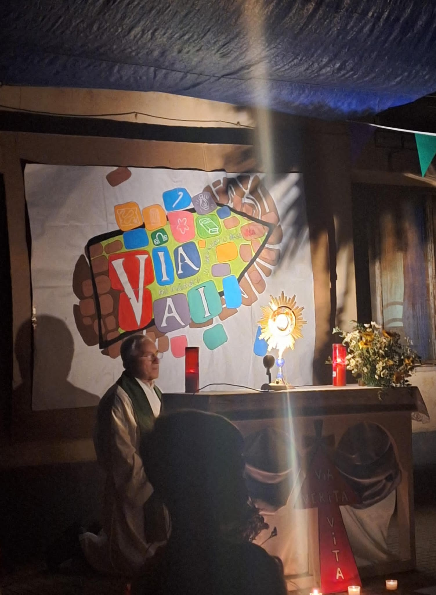
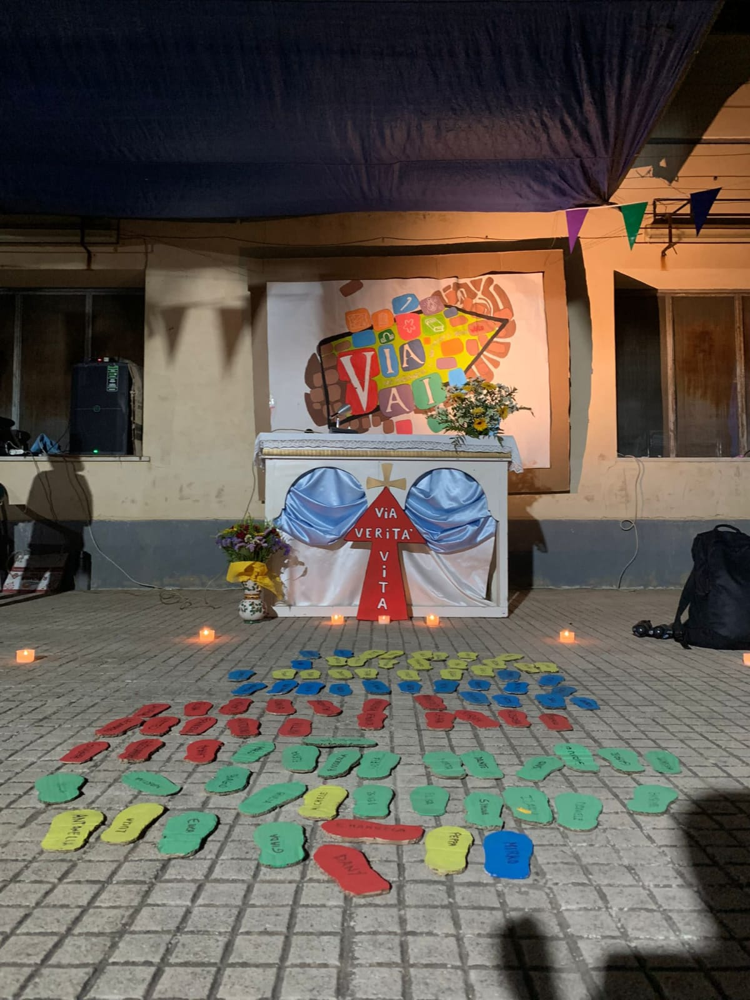

Introduzione
Il campo scuola è un momento di aggregazione tra giovani e bambini,in cui si concentrano giochi, risate e anche pianti tutto però con un base di preghiera con l'obiettivo di avvicinare i bambini alla fede cristiana.
Dai giovani e per i giovani
Il campo scuola è un momento di aggregazione tra giovani e bambini,in cui si concentrano giochi, risate e anche pianti tutto però con un base di preghiera con l'obiettivo di avvicinare i bambini alla fede cristiana.
Nei primi anni del nuovo millennio era necessario trovare soluzioni nuove per portare alle nuove generazioni il messaggio che la Chiesa trasmette da sempre. Ma come? Tutto nasce da un idea di un giovane sacerdote, allora viceparroco di Santo Stefano di Camastra,Padre Giuseppe di Martino. Nell'estate del 2004 un piccolo gruppo di giovani investì le proprie energie per organizzare quattro giornate in cui ragazze e ragazzi delle scuole medie si riunissero lontano da casa. La formula comprendeva momenti di riflessione,di divertimento, convivialità e preghiera comune. Negli anni la proposta coinvolse anche bambini più piccoli,portando gli animatori a organizzare 2 campi, uno per i bambini delle scuole medie e uno per quelli delle elementari.
Recita: Le Attività della giornata cominciano con la recita in cui i bambini sono invitati a seguire le vicende di una storia messa in scena dagli animatori. Serve a far capire ai bambini tramite queste scenette il tema del campo in corso portando i bambini a migliorare le loro capacità di ascolto e attenzione.
Attività: In seguito alla recita si svolgono delle attività di riflessione portando Bambini e Animatori della stessa squadra a interrogarsi su se stessi. Questo li porta a dialogare tra loro sconfiggendo timidezza e pregiudizi.
Giochi: Ora è il momento di divertirsi un po'. Nelle ore più calde della giornata i bambini sono chiamati a cimentarsi in vari giochi di squadra. Così facendo sono spinti a mettersi in gioco sfidando se stessi e gli altri in una competizione sana
Momenti Liturgici: Il cuore pulsante di tutte le attività giornaliere sono tutti i momenti in cui preghiamo:la Messa,le preghiere durante tutta la giornata e soprattutto l'adorazione dell'ultima notte. Cercando di far tornare a casa i bambini con un bel ricordo del campo scuola e sperando che siano testimoni con i propri familiari e amici.
Il Gruppo Animatori è formato da circa 40 ragazze e ragazzi di età compresa tra i 14 e i 30 anni. I ruoli principali sono:
La Mia Esperienza
Tutto cominciò nel 2022 quando un mio caro amico mi spinse a fare il campo e fui accolto da questa meravigliosa e grandissima famiglia. Qui ho ritrovato me stesso in una veste nuova, non più il ragazzo che si nascondeva in quello che gli altri volevano da lui ma piuttosto un ragazzo autentico, più consapevole delle sue qualità.questa esperienza mi ha portato negli anni a fare altre esperienze simili come il catechista,il portantino, membro del comitato di Maria SS.Addolorata e altre mille cose.





